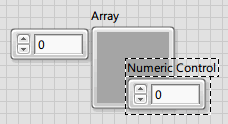

You cannot limit the size of an array to a fixed number of elements. However, when you set the default values of an array control, you can set the default size. You set the default values and array size when you create the array control.
| Note Do not make the default size of the array larger than necessary. If you set a large default size for an array, the default data for each element of the array saves with the VI and increases the size of the VI on disk. |
An array shell without a data object is undefined and has no data type. The VI will remain broken until you assign a data type by placing a control or indicator in the array shell.
When you place a control or indicator in the array shell, the empty array assumes the data type of the control or indicator. After you assign a data type to an array, you can use it in a VI regardless of whether the array is empty. The length of the empty array is 0, and the array elements are dimmed. You might place an empty array in a top-level VI that calls a subVI to populate the array.
For example, the following image displays an empty array shell about to receive a numeric data type.
A front panel array control has the following two default values: